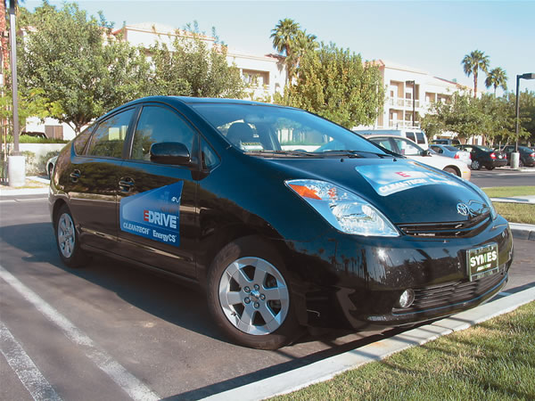
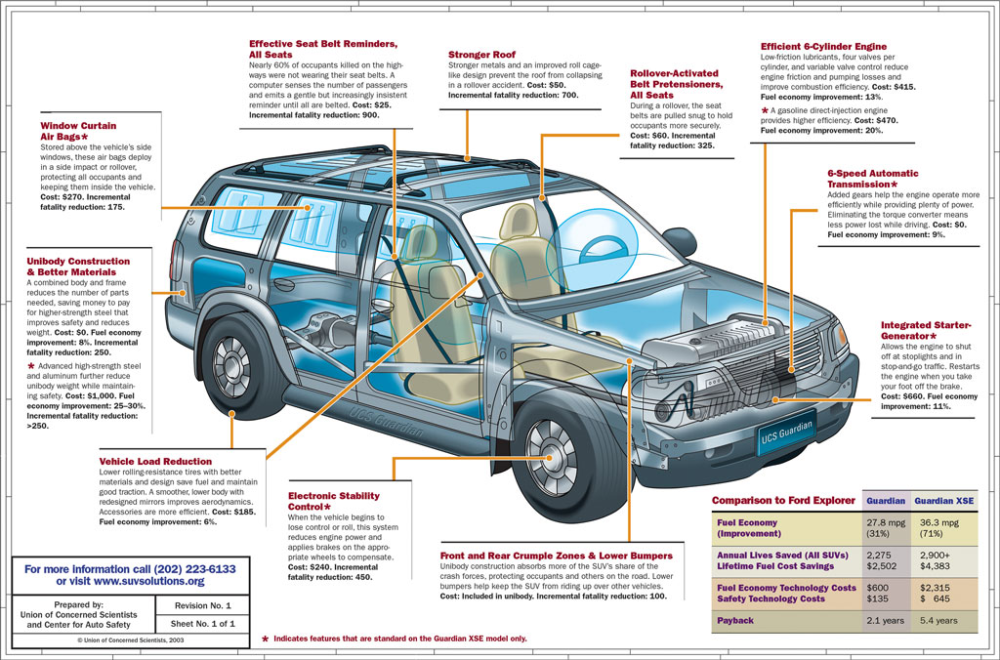

I am riding in a customized 2005 Toyota Prius traveling just under 35 mph, and the central display console shows we’re getting 99.9 miles per gallon. We’re actually doing much better than that, but the Prius’ mileage monitor can’t display anything more than three digits.
We are, in fact, getting better than 160 mpg as we roll along, powered only by the Prius’ electric motor and a custom battery pack wedged unobtrusively below the trunk deck. This gasoline-electric hybrid looks like any one of about 200,000 Priuses on U.S. roads, but with one historically significant difference: It is one of only a few in the world to be converted into an electric plug-in hybrid. The first was modified by The California Cars Initiative, a northern California nonprofit organization, and then came two others with better batteries by Peter Nortman and Greg Hanssen of Energy CS, a small research-and-development firm in Monrovia, Calif.
Carmakers such as Ford, Honda-and especially Toyota-have gone to great lengths to reassure the public that, unlike earlier battery-only electric cars, they don’t have to plug hybrids in; the batteries recharge while you drive. But equip a hybrid with larger batteries that you can recharge from the grid overnight for pennies, and surprising things start to happen. While a standard 2004 or newer Prius averages about 50 mpg in real-world driving conditions, plug-in hybrids can deliver three times that - or more-for short distances, and at least double that mileage for longer distances.
As most Prius owners know - and the Escape Hybrid from Ford has a similar feature - you can drive the car for short distances at slow speeds on its electric motor and battery pack alone; typically a mile or so. The gasoline engine only provides power when the control computer determines the nickel metal hydride battery needs recharging, or when you accelerate briskly or beyond neighborhood driving speeds.
What Nortman and Hanssen did was replace the standard 1.3-kilowatt-hour (kWh) battery with a 9-kWh lithium-ion battery pack from Valence Technology in Austin, Texas. Some nifty computer code hacking to the battery management system and a larger onboard charger enables these modified Priuses to run more efficiently - up to 60 milesalmost exclusively on electric power, driving at lower speeds. After that, the car reverts back and operates like a standard Prius. But unlike the factory model, the Energy CS conversions can be plugged into a household 110-volt, 60-cycle outlet, which recharges the larger battery pack from the local power grid.
The concept of electric plug-in hybrids has been around for about a decade. Andy Frank and his students at the University of California at Davis have built a number of prototypes based on sedans and sport utility vehicles. Electric companies are attracted to the idea because it would enable them to sell more of their surplus overnight power. Carmakers, which have started to shift their position on this issue lately, historically have tended to denigrate both electric cars and the plug-in hybrid concept as contributing to global warming. They point out that most utilities currently generate electricity from coal, and because gasoline burns cleaner than coal, the argument is that a shift to electric cars would generate more air pollution, not lessen it.
But it turns out that this argument is not correct. Plug-in hybrids actually will contribute less climate-altering carbon dioxide (CO2) than gasoline. Here’s why: A conventional gas vehicle releases about 24 pounds of CO2 and travels about 24 miles on 1 gallon of gas. It would take about 6 pounds of coal, creating just 12 pounds of CO2, to produce enough electricity to travel the same distance in a plug-in hybrid. What’s more, not all our electricity comes from coal; roughly 30 percent of the grid electricity that would be used by plug-ins comes from non-CO2-producing or CO2-neutral sources, including nuclear and hydroelectric plants, biomass and renewables such as wind and solar energy. This means that plug-ins would produce only about 8 pounds of CO2, or about one-third as much as a conventional 24-mpg gasoline engine. Burning coal gives off other pollutants, including mercury, particulates and sulfur, but these either are captured, or soon will be captured, using advances in technology at newer power plants.
The emergence of biofuels - such as ethanol and biodiesel - to power the internal-combustion engine makes the potential for plug-ins even more compelling. Proponents such as James Woolsey, the former director of the CIA, argue that burning E85 (85-percent ethanol; 15-percent gasoline) would further reduce the amount of gasoline the “flexible-fuel plug-in hybrid” would consume. If Energy CS’s 160-mpg Prius were refitted to burn E85, it could consume only 15 percent as much gasoline, resulting in the equivalent of a conventional car getting 1,000 mpg for the first 60 miles - at least theoretically. After 60 miles, the fuel efficiency would drop back to 333-mpg gasoline equivalent.
Looking even further down the road, a study by scientists at the University of Delaware concluded that plug-in hybrids could be made to give and take power from their local power grid - a concept called vehicle-to-grid or “V2G” hybrids. They calculate the North American grid could receive up to 50 percent of its electricity from wind power alone, if plug-in hybrids’ batteries acted as temporary electric storage devices.
Energy CS’s 160-mpg Prius demonstrates it’s possible to dramatically improve the efficiency of today’s hybrids while creating significant environmental and economic benefits for consumers, the nation and the world.
|
 BILL MOORE This customized Toyota Prius has extra batteries that can be plugged into a standard 110-volt electric outlet for recharging. The revolutionary concept would allow drivers to travel completely on electricity for 50 to 60 miles;the gas engine would provide power for extended trips. |
 The Prototype 28-mpg Guardian SUV |
|